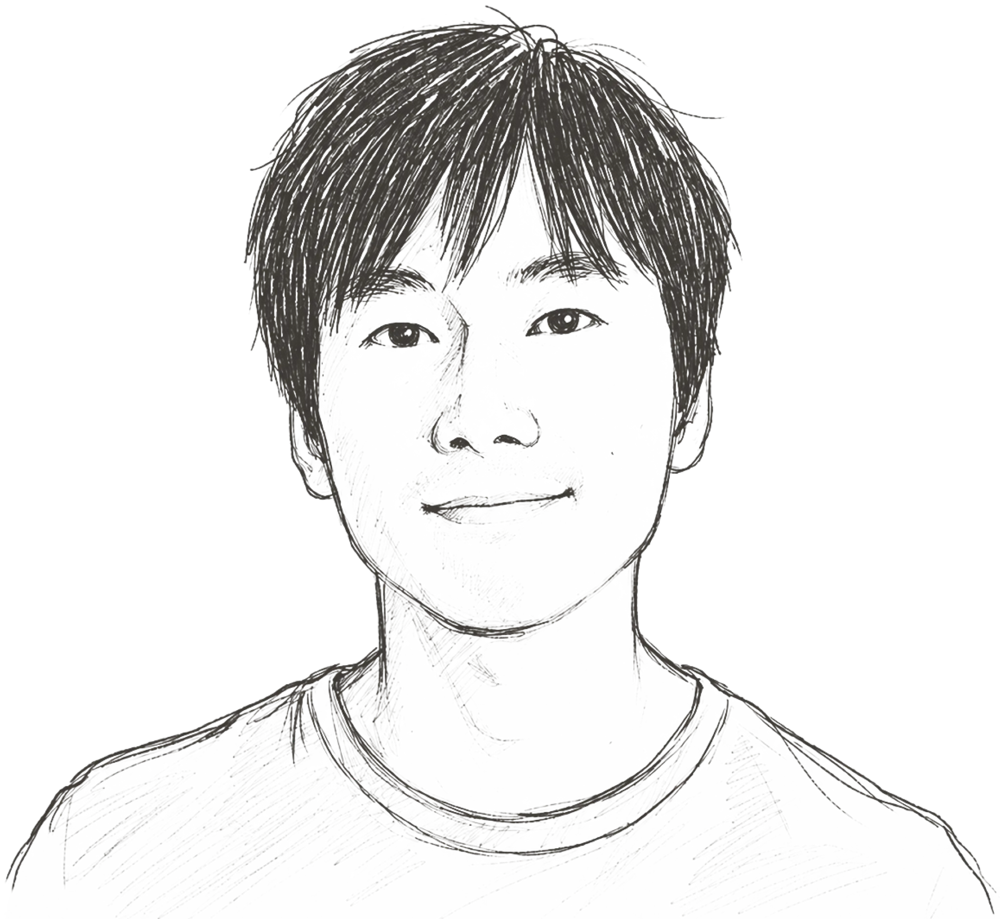
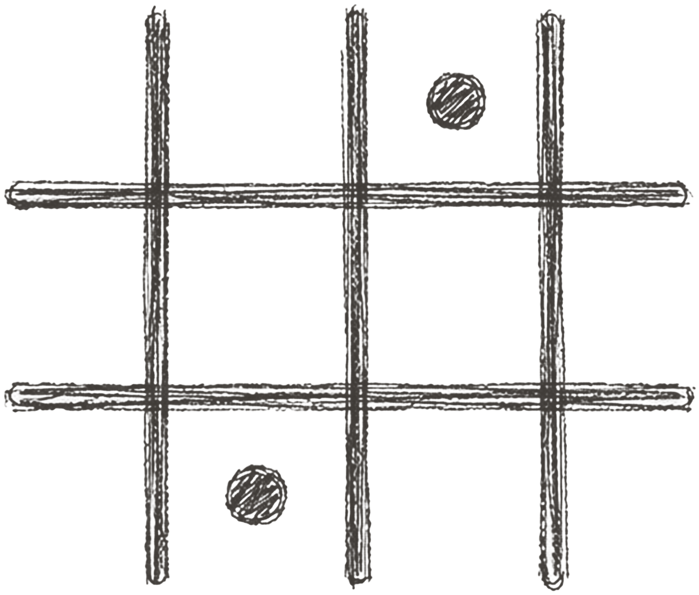
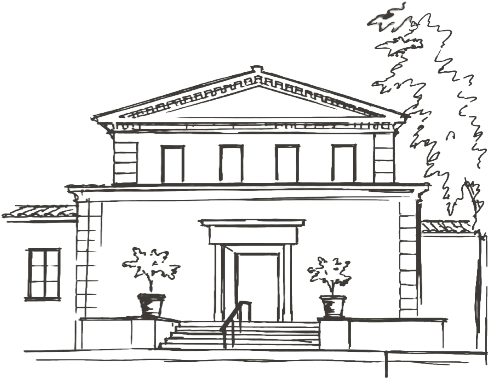
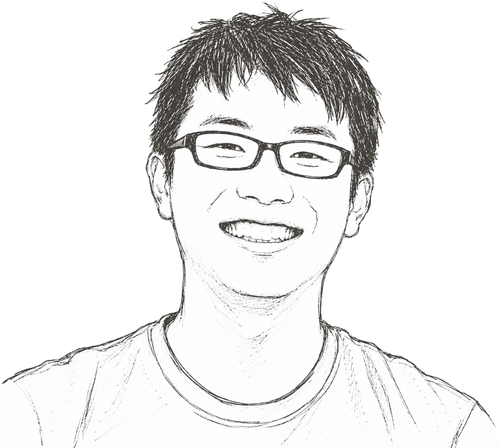
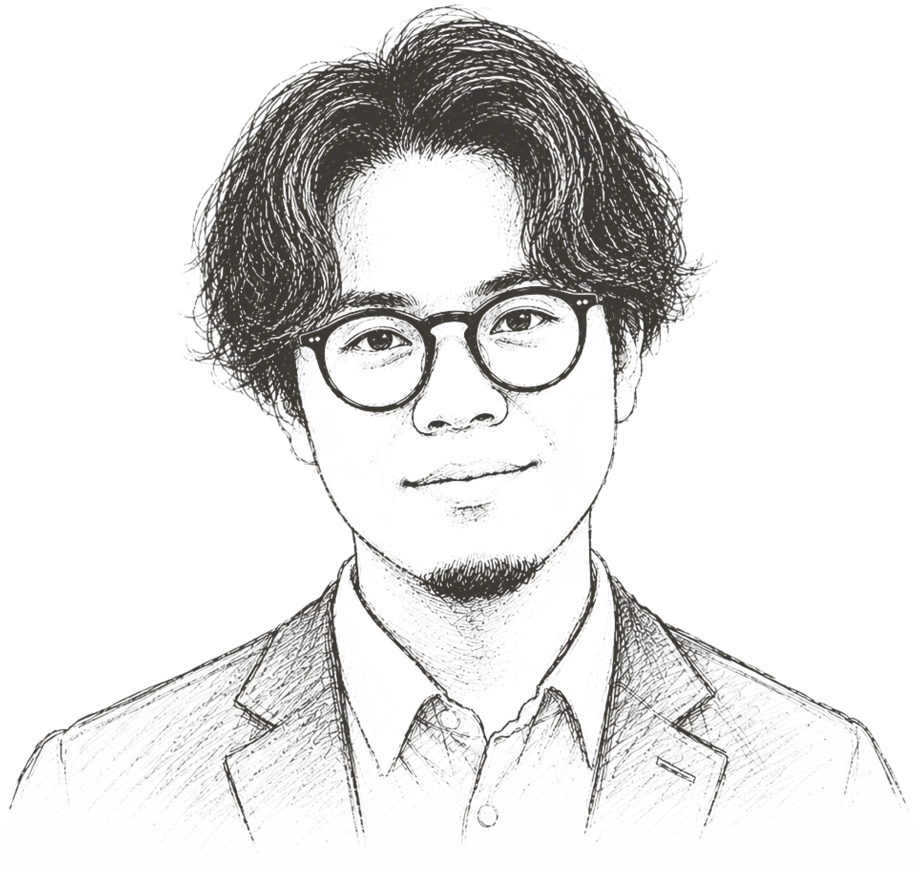
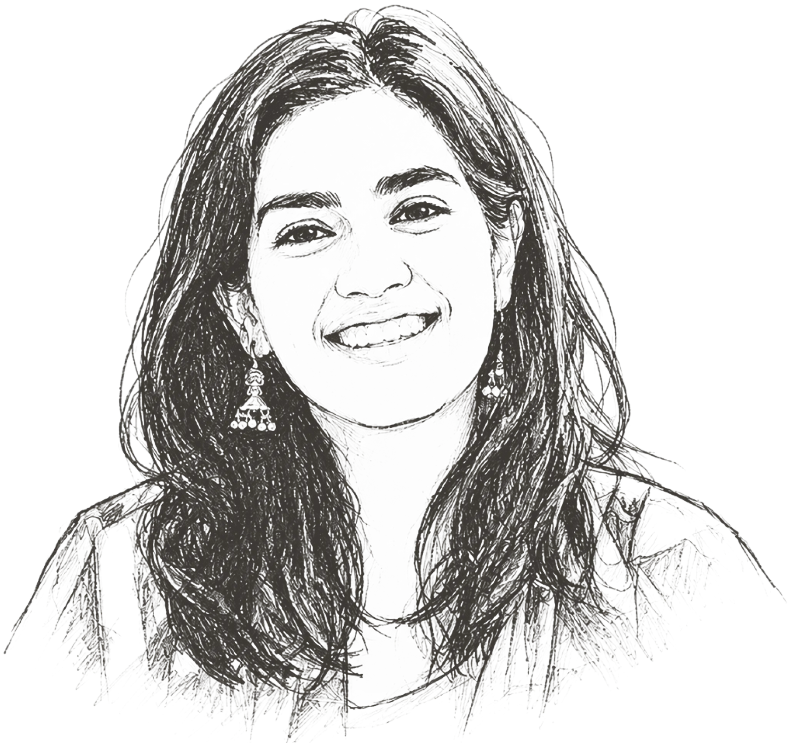
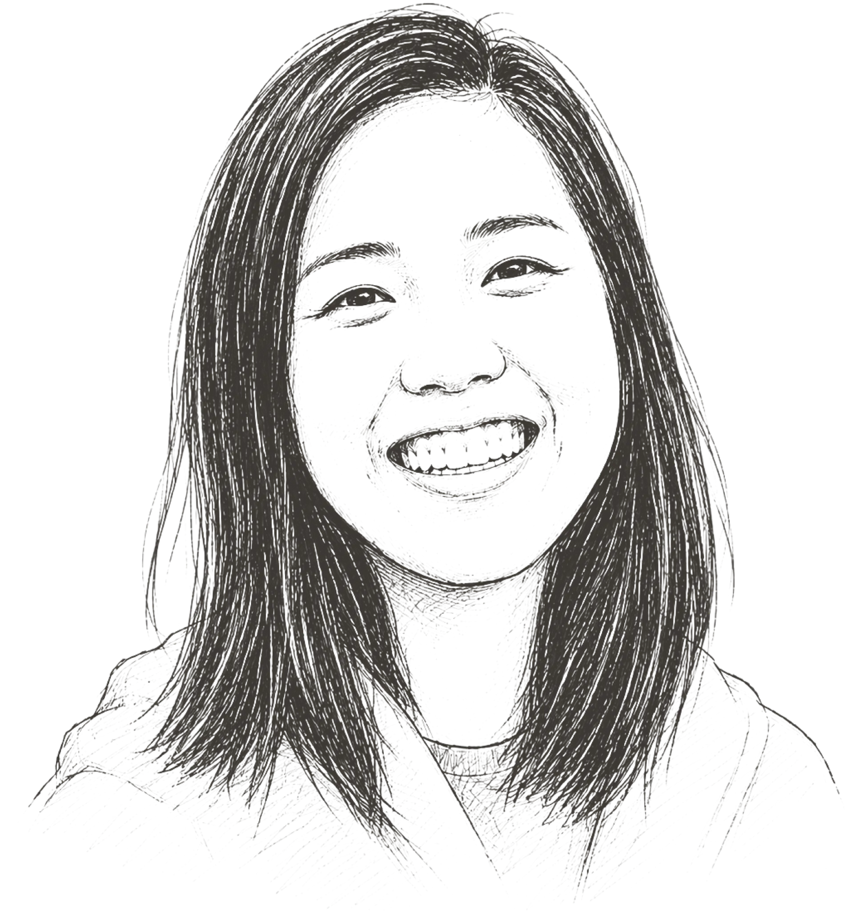
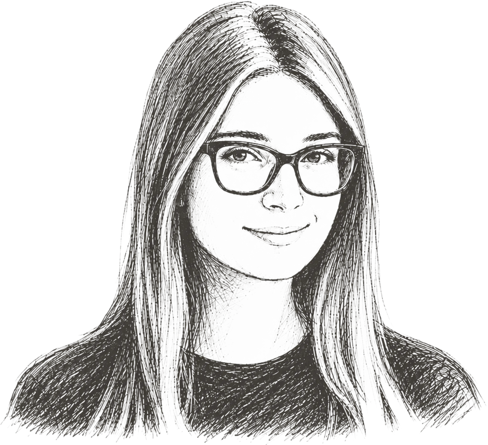

Daisuke Nishimura
Co-Founder & Managing Director
Leading product strategy for AI-native
assessment at Aolia.
Ongoing exploration of how assessment for accreditation could work better. Here we’re sharing the research, the conversations, and the hard questions behind it.

Assessment for accreditation follows a familiar pattern across systems like AACSB and ABET: reviewing student work, applying evaluation criteria, and documenting evidence of learning outcomes.
This work sits at the intersection of faculty workload, institutional accountability, and continuous improvement — yet remains one of the least well-supported workflows in higher education.
We’re starting by looking at a few of the most challenging parts:
We are exploring how this process could be redesigned in an AI-native way — reducing manual effort while strengthening the evidence behind assessment with faculty remaining fully in control.

Aolia is an initiative by Macnica, a global technology solutions company headquartered in Japan.
Our early pilot work with Claremont Graduate University, home of the Drucker School of Management, grounds the work in real assessment workflows, faculty needs, and the practical challenges of accreditation.
We’re starting with AACSB-accredited business schools, with the longer-term goal of supporting accreditation and outcomes assessment across higher education
Accreditation is critical for business schools in today's market, with nothing more time consuming in that process than assessment. A tool that frees faculty from the meticulous processes associated with assessment - while strengthening the evidence underneath it - isn't just useful. That's a game changer.
Henry Y. Hwang Dean, Drucker School of Management
Claremont Graduate University
We’re a team exploring how assessment for accreditation can work better — alongside educators.

Co-Founder & Managing Director
Leading product strategy for AI-native
assessment at Aolia.

Chief Engineer & Product Engineering Lead
Leading end-to-end development of
Aolia.

DevOps Engineer
Web application infrastructure
development.

Go to Market & Research Lead
Lead product and customer research for
Aolia.

AI Technical Lead
Leads the technical strategy of the AI
team.

Marketing Specialist
Focused on content and marketing
strategy.
We’re sharing the research, the hard questions, and what we’re building — with the people who know this work best.